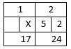

Bowling Again
For the 2018 version of this exercise, click here.
Fall 2016: Question 15 (use C language to write this program)
 Xiao Ming goes to the bowling alley for another round of bowling, this time with the following rules:
Xiao Ming goes to the bowling alley for another round of bowling, this time with the following rules:
- There are ten frames in a game, and each frame has 10 pins. One point is awarded for every pin knocked down; if 10 pins are knocked down then all pins are knocked down.
- The maximum score per frame is 10, and a player can roll the ball twice in each frame.
- During the first 9 frames, if all pins are knocked down in one hit, then the player gets a STRIKE. The player can add the total number of pins knocked down in the next two rolls into the score.

In the above example, the player gets a total of 10 + 5 + 2 = 17 points for Frame 1. - During the first 9 frames, if all pins are knocked down in two hits, then the player gets a SPARE. The player can add the total number of pins knocked down in the next two rolls into the score.

In the above example, the player gets a total of 7 + 3 + 5 = 15 points for Frame 1.
- If the player gets a strike in the 10th frame, then the player can roll two more balls, and the score for the extra rolls will be counted as well.
- If the player gets a spare in the 10th frame, then the player can roll one more ball, and the score for the extra roll will be counted as well.
- The bonus scores earned from strikes or spares can only be applied in the first 9 frames, and CANNOT be applied in the 10th frame.
- The scoreboard has 21 columns in total; the first 9 frames have two columns each and the 10th frame has three.
Input instruction: Input 21 whole numbers.
Output instruction: Output the total score.
| Sample Input | Expected Output |
|---|---|
|
10 0 9 1 10 0 7 3 10 0 2 8 10 0 5 5 10 0 1 9 10 |
200 |
|
5 5 8 2 6 4 7 3 7 3 9 1 5 5 8 2 9 1 9 1 10 | 178 |